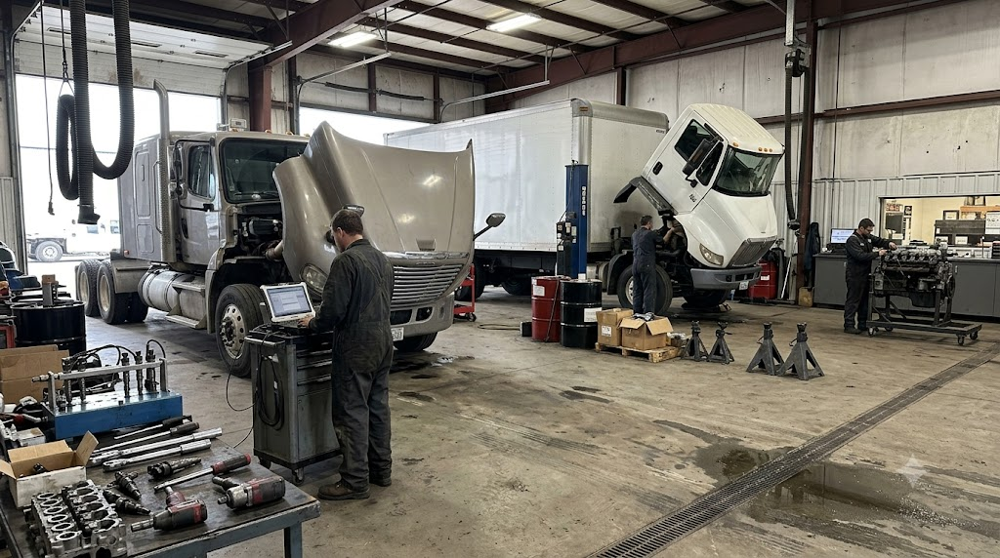
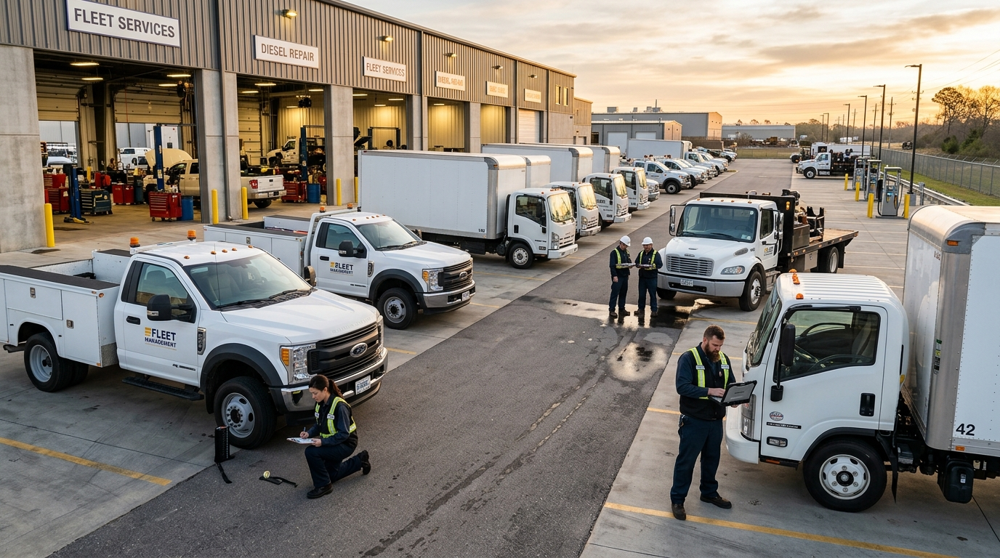

Heavy-Duty Repair & Performance Services
From OEM computer diagnostics and fuel rail testing to full in-frame long-block rebuilds and commercial fleet maintenance, explore our comprehensive technical service catalog.

OEM Telemetry
Genuine Ford FDRS, GM GDS2, Cummins INSITE, CAT ET and Detroit Diagnostic Link subscriptions.
Clean-Room Fuel Lab
Bosch high-pressure test benches to balance common rail injectors and CP3/CP4 pumps to 2 microns.
SuperFlow Chassis Dyno
In-house dynamometer capable of absorbing 2,500+ lb-ft of torque to verify loaded towing power.
2-Yr / 24k Warranty
Every mechanical overhaul and high-pressure repair is backed by our written nationwide warranty.
Explore Specialized Diesel Services
Filter by service division or search directly by system symptom or component.
The Synergy Between Repair & Performance
At Titan Diesel Works, we don't separate heavy-duty repair from performance upgrades. A truck that is tuned for 750 horsepower without upgraded head studs, a proper lift pump, and a high-flow intercooler will soon end up in our engine rebuild bay with a blown head gasket and cracked piston.
When our technicians rebuild a long block or replace a turbocharger, we incorporate reliability-enhancing upgrades—such as billet unison rings, ARP Custom Age 625+ studs, and ceramic-coated piston crowns—ensuring your truck returns to work stronger and cooler than factory stock.
Review Our Dyno Case StudiesThe Titan Reliability Hierarchy
ARP head studs, MLS head gaskets, and precision cylinder head surface finish (< 30 Ra).
FASS/AirDog positive lift pumps, 2-micron filtration, and high-efficiency compound turbocharging.
All-aluminum radiators, helical stainless EGR coolers, and remote transmission stacked-plate coolers.
Keep Your Commercial Assets On the Road
Whether your company operates 3 service trucks or 50 medium-duty delivery rigs, fleet downtime directly erodes your margins. Titan's Fleet Care Program delivers scheduled night PM services, priority bay triage, and automated maintenance records that satisfy Federal Motor Carrier Safety Administration (FMCSA) audits.
- Annual Federal DOT Safety Inspections: Certified brake, steering, and chassis safety checks with official decals.
- DPF Thermal Regeneration: Ultrasonic pulse de-ashing and kiln baking that restores 98%+ exhaust flow.
- Volume Fleet Pricing: Discounted labor rates, priority parts procurement, and 30-day corporate terms.

Diesel Service & Workshop FAQs
Transparent answers to common questions about our repair and tuning procedures.
Ready to Schedule Your Diesel Truck Service?
Whether you have a specific symptom or need a full multi-point pre-trip inspection, lock in your diagnostic slot with our master certified technicians.